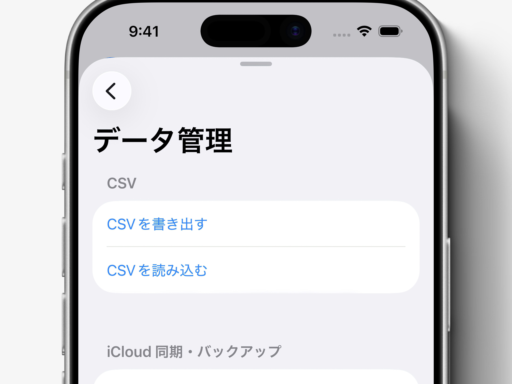

これまでの家計簿、
かんたん引き継ぎ
これまで他の家計簿アプリやExcelで管理していた記録も、 LiltではCSVを使ってまとめて引き継ぐことができます。 過去の支出や収入を残したまま、 これからの管理をLiltへ移行できます。

今回のコツ
- 他の家計簿アプリやExcelのデータをCSVで引き継げます。
- カテゴリや資金源は、自動で作成・紐付けされます。
- 読み込み結果は「データ管理」画面下部から確認できます。
使い方
-
インポート用のCSVファイルを用意します。
はじめに「CSVを書き出す」をタップして出力されるCSVを、 テンプレートとして使用できます。 CSVの基本仕様については、下にまとめています。
- 画面右上の設定ボタンをタップします。
- 「データ管理」 を開きます。
- 「CSVを読み込む」をタップします。
- 用意していたCSVファイルを選択します。
- 読み込みが完了すると、 データ管理画面下部の「結果」に内容が表示されます。
CSVの基本仕様
CSVは1行につき1件の記録として読み込まれます。 主に以下の列に対応しています。
date：日付
2025/03/15 14:30:00、
2025-03-15 14:30、
2025/03/15、
2025-03-15、
2025-03-15T14:30:00.000Z
などを自動判別します。
日付のみの場合は、その日の0:00として扱われます。
前後のスペースや改行は自動で整理されます。
kind：種別
expense は支出、
income は収入として扱われます。
category：カテゴリ
既存カテゴリと一致すれば自動で紐付け、
一致しない場合は新規作成されます。
category_identifier が含まれている場合は、
カテゴリ名よりも優先して照合されます。
funding_source：支払元・入金先
既存の項目と一致すれば紐付け、 一致しない場合は自動で追加されます。
amount：金額
¥1,500、
1500円、
1,500
などの形式を自動で整形し、
整数として読み込みます。
note：メモ
自由に入力できます。省略も可能です。
補足
CSVの読み込み結果は、 データ管理画面下部の「結果」から確認できます。 エラーが発生した場合も、 対象の行番号や内容が表示されます。